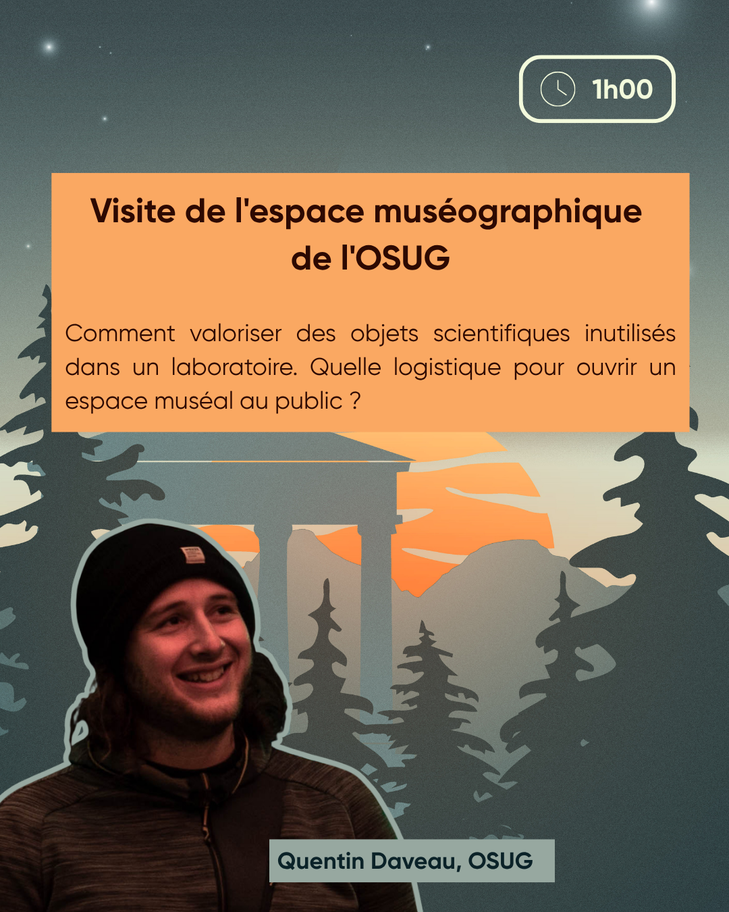

Atelier


Visite de l'espace muséographique de l'OSUG
Résumé
Comment valoriser des objets scientifiques inutilisés dans un laboratoire. Quelle logistique pour ouvrir un espace muséographique au public ?
intervenant·es
Quentin Daveau est
